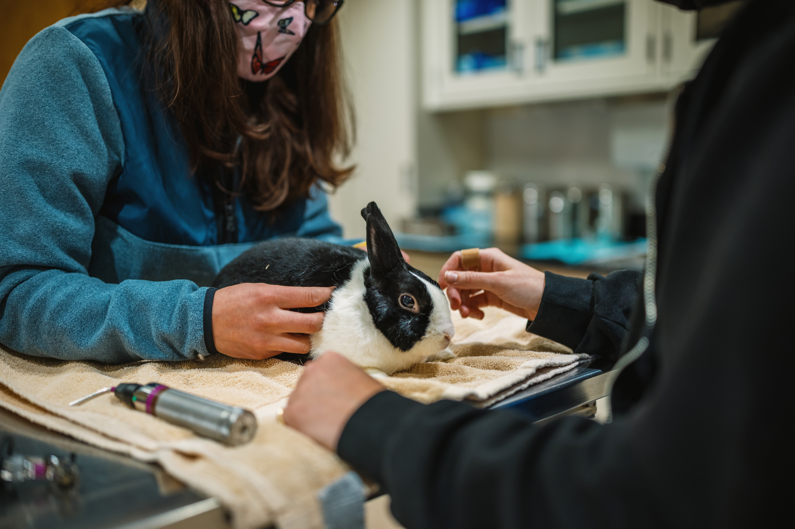

Because rabbits hide their pain, regular check-ups and daily monitoring are vital. At PurrPets, we recommend finding an Exotic Animal Vet specifically trained in lagomorph medicine.

Perform these quick checks every morning during breakfast time:
| Area | What to Look For | Warning Signs |
|---|---|---|
| Nose & Eyes | Clear and dry. | Discharge, crustiness, or frequent sneezing. |
| Ears | Clean and temperature-stable. | Waxy buildup, ear-shaking, or extreme heat. |
| Teeth | Properly aligned (Malocclusion). | Drooling (slobbers) or refusing to eat hay. |
| Feet | Fur-covered heels. | Red, raw spots (Sore Hocks) from hard floors. |
The most common rabbit emergency is GI Stasis (Gastrointestinal Stasis). This is when the digestive system slows down or stops. If your rabbit has not eaten or pooped for 12 hours, it is a life-threatening emergency.
Did you know? Unspayed female rabbits have an 80% chance of developing uterine cancer by age 4. Neutering also reduces aggressive "territorial" behavior like lunging or spraying. PurrPets strongly recommends this procedure for all house rabbits.